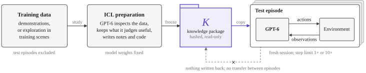
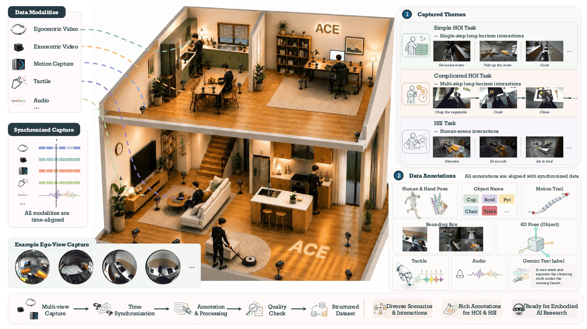
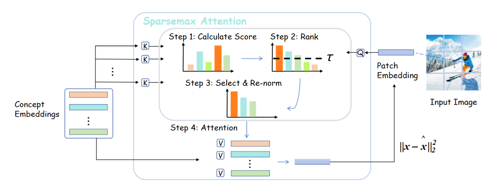

Has GPT-6-Astra Achieved Embodied Intelligence?
A collaborative study of foundation models for robotic manipulation and navigation, spanning simulated benchmarks and real-world robot deployments.
ROBOTICS · EMBODIED INTELLIGENCE
Future nostalgia. Real-world curiosity.
Hey, I’m Dawei. I study Robotics Engineering at Shenzhen University and work as a Robotics Algorithm Engineer Intern at ACE Robotics. I’m curious about how machines see, understand, and act in our world.
NEW Our collaborative report on embodied intelligence is now on arXiv. Read the report ↗
ACE-Data-0, our human-centric embodied dataset, is released. Explore the project ↗
Improving Sparse Autoencoder with Dynamic Attention appears at CVPR 2026. Read the paper ↗
KeyVT was accepted to ICML 2026.
Joined ACE Robotics as a Robotics Algorithm Engineer Intern.
RETLLM was accepted to ICASSP 2026.

A collaborative study of foundation models for robotic manipulation and navigation, spanning simulated benchmarks and real-world robot deployments.


Geometry-aware view selection and optimal-transport token selection for efficient, training-free 3D scene understanding.


A coarse-to-fine retrieval framework that uses multimodal language models without additional training or task-specific data.
Robotics Algorithm Engineer Intern
Feb 2026 — Present
Robotics Engineering
Shenzhen, China
YOU FOUND ME AT THE END OF THE INTERNET
For conversations about robotics, multimodal learning, and embodied intelligence.